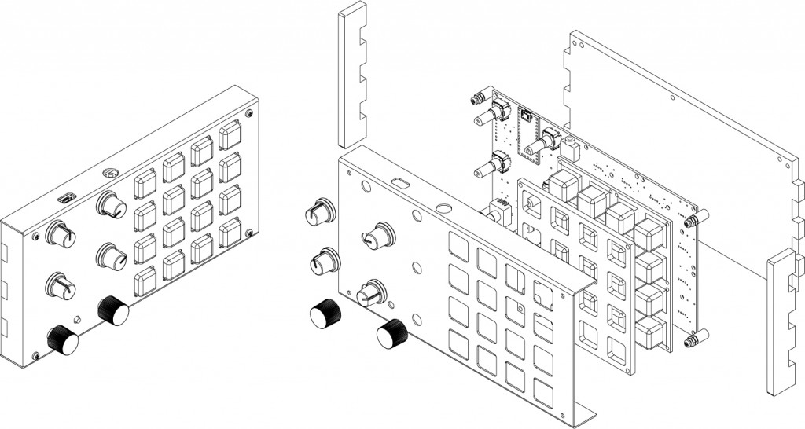

visual_sound_art
некий софт, созданный для аналоговых инструментов, создающий из музыки generative visual art. таким образом музыка напрямую создает визуальный контент, который видоизменяется вместе с ней в режиме реального времени
Проблема
музыканты могут самостоятельно без дополнительной помощи vj объединить свою музыку и видео в единое целое, создать собственный оригинальный контент, используя его в различных сферах (инсталляции, тусовки, клипмейкерство, etc.)
Целевая аудитория
музыканты/художники/дизайнеры (саунд/вижуал/моушн) dj/vj
Решение
это будет собранный/спаянный самостоятельно контроллер + написанная программа, которая генерит визуальную составляющую + что-то между контроллером и программой, которая их соединяет, в итоге должен получиться некий ивент в галерее/вузе, где каждый желающий сможет сделать собственный live session с музыкой и видео, опробовав продукт, а также лэндинг пэйдж с описанием продукта + супер классные аудио/видео с ним
Что из теории придется изучить?
электроника (резисторы-конденсаторы-транзисторы-диоды), современные микроконтроллерные платы (Arduino, Teensy, etc.) и микрокомпьютеры (RPi, BeagleBoard и т.д.), мультимедиа-хакерство (DiY , сёркут бендинг) и т.д., синтез (изучение основ модульного синтеза), теория звука (частота, амплитуда, фаза звука, разрядность и частота дискретизации)
Что будем юзать на практике?
Pure Data (PD) — визуальный язык программирования. MAX — графическая среда для кодинга мультимедиа, текстовое программирование — CSound, processing
Риски
есть риск, что у меня попросту не хватит ума, чтобы изучить и понять все эти штуки. также можно обломаться с поиском каких-то запчастей для аналогового инструмента
Команда
в команде только я, но планируется привлечение сторонних экспертов и ребят, кто этим уже занимается. в т.ч. чуваки из ГРАУНД Ходынка и soundartist.ru + еще пару знакомых знакомых, кто делает синты и шарит в физике